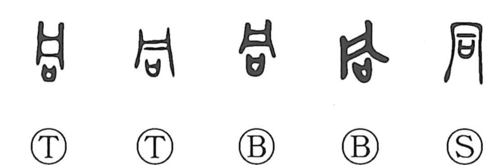

同

Kun: onaji | On: dou
same ・ together ・ to share
Explanation
In the oracle-bone and bronze forms, 同 combines 凡, the image of a plate, with 口, a ritual receptacle (sai) that held covenant writings offered to the gods. In early use, 同 was the name of a tubular wine vessel; the Book of Documents (Gu Ming) mentions a jade version (同瑁) used at accession rites. In the rite called 興, one lifts the 同-cup with both hands, supports it, and pours a libation onto the ground to rouse the spirits dwelling there. From the Zhou practice of assembling the lords to share this single cup in audience with the Son of Heaven (会同), the character came to mean to share and act together, and thus “the same.”